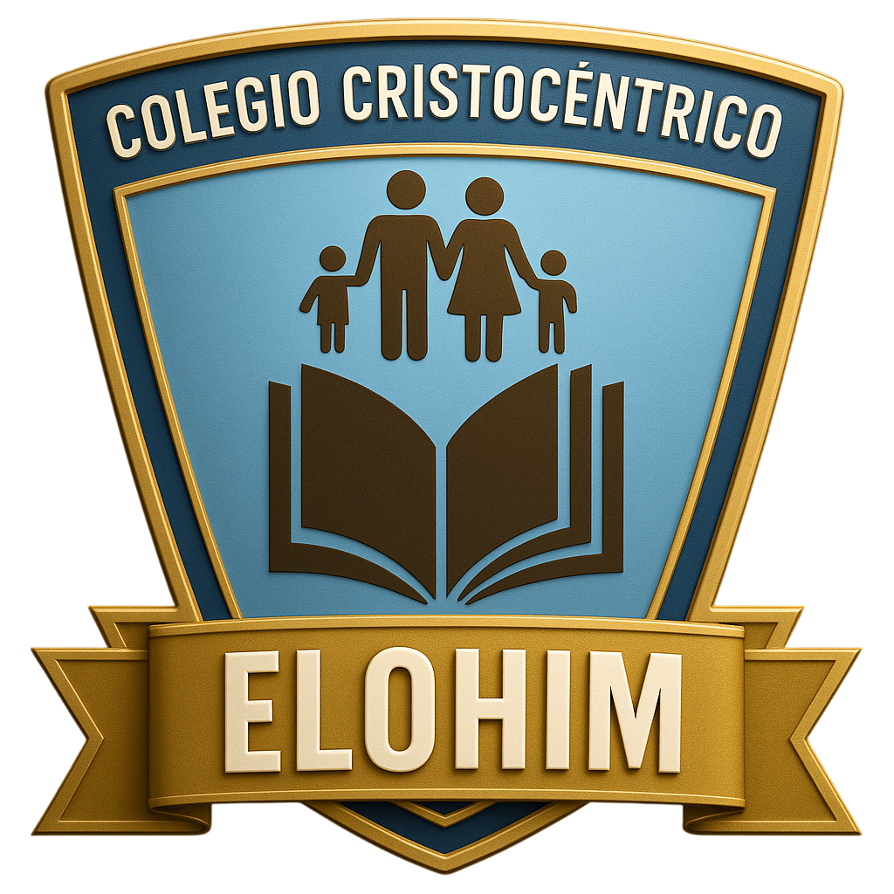

Satipo · 2026
Elohim SGE
Sistema de gestión escolar de la I.E.P. Elohim — Colegio Cristocéntrico. La paleta nace íntegramente de la insignia: el campo azul, el borde y banner dorados, la familia y el libro en marrón, y el lema en crema.